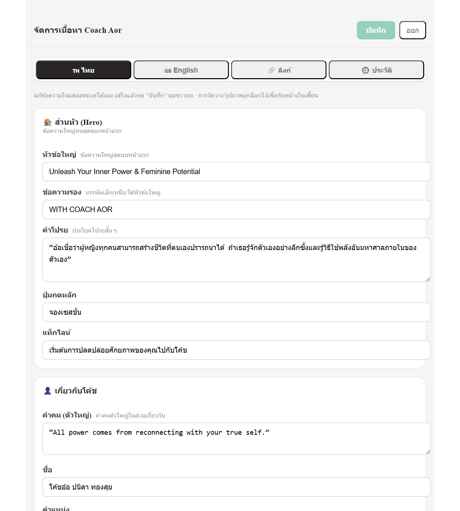
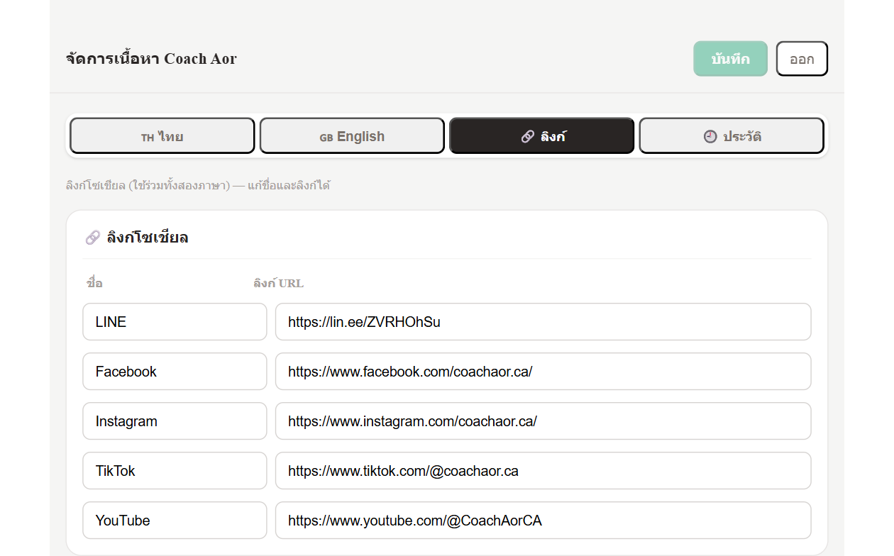

เปิดเบราว์เซอร์ไปที่ coachaorca.com/admin → ใส่รหัสผ่าน → กด “เข้าสู่ระบบ”
ด้านบนมี 4 แท็บ: 🇹🇭 ไทย · 🇬🇧 English · 🔗 ลิงก์ · 🕘 ประวัติ
เนื้อหาแบ่งเป็นหมวดชัดเจน — ส่วนหัว, เกี่ยวกับโค้ช, บริการ, รีวิว, การจอง, เมนู เลื่อนหาหมวดที่ต้องการได้เลย

คลิกในช่องแล้วพิมพ์ได้เลย · การ์ด บริการ และ รีวิว กดปุ่ม “+ เพิ่ม” หรือ “ลบ” ได้ · แท็บ ลิงก์ ใช้แก้ชื่อและ URL โซเชียล (ใช้ร่วมทั้งสองภาษา)

กดปุ่ม “บันทึก” สีเขียวมุมขวาบน (จะกดได้เมื่อมีการแก้ไข)
เปิด coachaorca.com เพื่อดูผล · ถ้ายังเห็นของเดิม กด Ctrl + F5 (รีเฟรชแบบล้าง cache)
ไปแท็บ 🕘 ประวัติ → หาเวอร์ชันก่อนหน้า → กด “ย้อนกลับ” → ยืนยัน · เนื้อหาจะคืนเป็นเวอร์ชันนั้นภายใน ~1 นาที